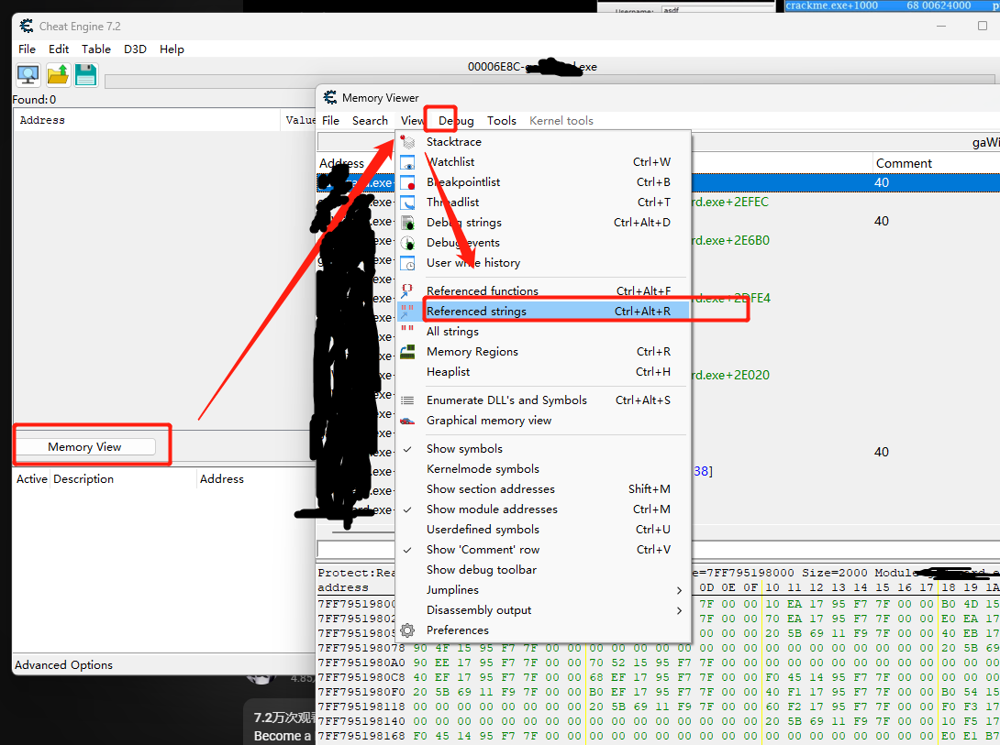
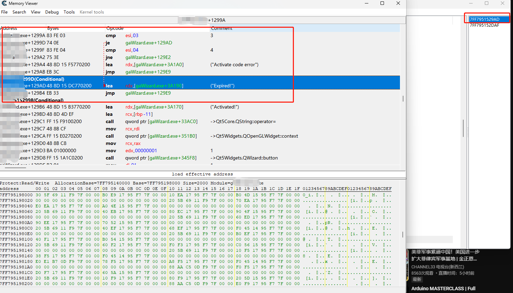
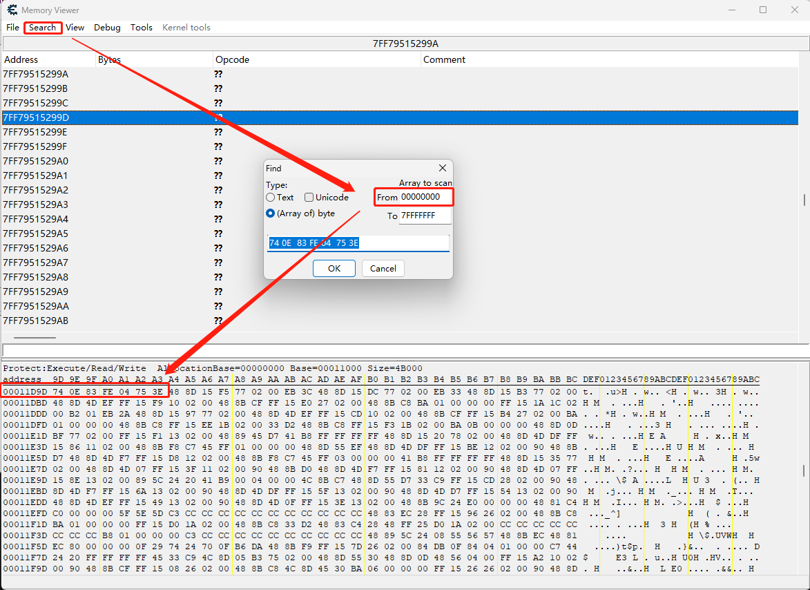

通过Cheat Engine 爆破注册码
玩《植物大战僵尸》时学过一点点CE，想着是不是可以用来追软件的注册码？谷歌了一下，果然还是有教程的。而且CE 上手要比OD 简单感觉。
爆破程序
首先将CE 附加到进程，然后使用错误的激活码激活几次，然后通过CE 在进程内存空间中查找错误提示的字符串，诸如expired 等。

然后查找字符串就能找到程序在什么位置会加载此字符串，下图示例中有两处：

双击其中任何一个地址，就可以查找到跳转代码：

找到对应的跳转，按照需要使用右键汇编或者NOP 掉指令。
重新输入错误的注册码，选择注册，提示注册成功。
有些程序不止会在一个位置验证，最好多试几个地方。
修改二进制文件
重新使用CE 打开程序.exe 文件，注意不是附加到进程，然后Memory View --> View --> Search --> Array of byte。输入上图中爆破前的字节码，如：

查找到的，就是需要修改的机器码在文件中的偏移位置。这时候通过二进制编辑工具，找到相应的位置，然后将机器码修改为爆破后的数值，另存为新的exe 即可。
比较简单的小软件就可以这么搞定。追注册码还是难了点~